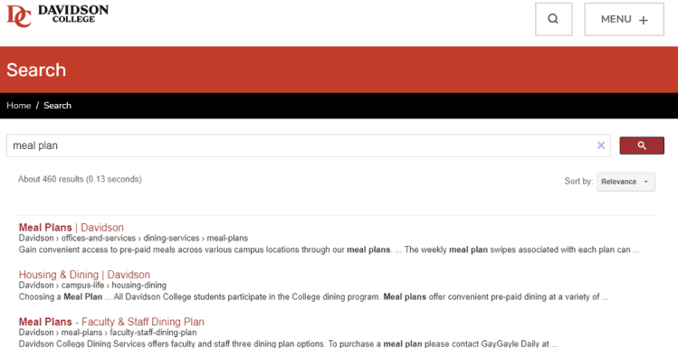
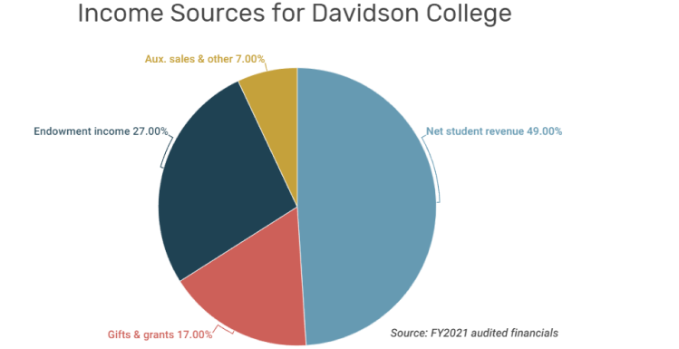

The usability test for Davidson.edu reveals significant challenges in
user experience and navigation. Participants were tasked with performing
various actions on the website, like finding meal plan options,
scheduling a study abroad appointment, and locating specific
information. The outcomes ranged from quick successes to Did Not Finish
(DNF). The test also included a user satisfaction survey with ratings
from 1 to 4, with 1 being the lowest and 4 being the highest.
Tasks
Task 1: Find Meal Plan Options
Success

This task was completed relatively quickly. However, the user
commented that the menu was "too messy," implying that information
could be better organized for quicker access.
Task 2: Schedule a study abroad appointment with Lauren
Stikeleather
Success
The user had to navigate through multiple levels of menus and
pages to schedule an appointment. While the task was completed,
the multiple steps indicate that the process could be streamlined
for a better user experience.
Task 3: How far is Davidson College campus from Charlotte in
miles?
Success
The user found this task very challenging, mentioning that the
"design is so bad that you just gloss over a lot of information."
Despite multiple steps, the user had difficulty finding the
specific information and criticized the design layout for making
it easy to overlook key details.
Task 4: Find the average net revenue percentage for Davidson
students.
Failure

The user gave up on this task, describing the experience as a
"nightmare." They had to navigate through several unrelated pages
and even downloaded a document that did not contain the required
information. This indicates a severe issue in information
accessibility.
Task 5: Find the Davidson Journal.
Success
This was the quickest task, taking only 34 seconds. It appears
that the search bar was effective in this case, suggesting that
some aspects of the website are more user-friendly than others.